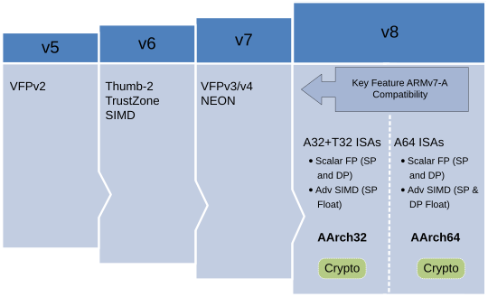
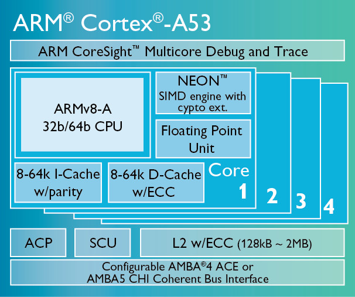
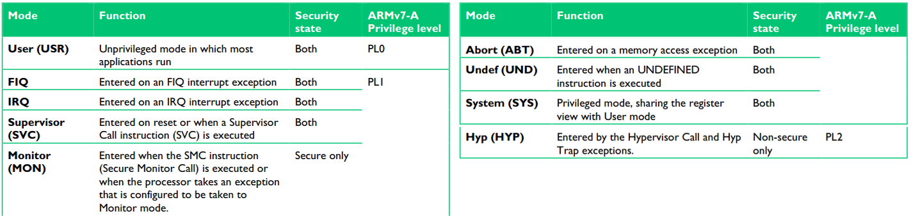
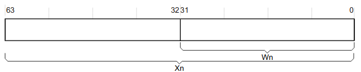
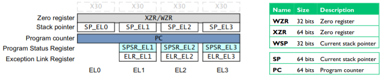
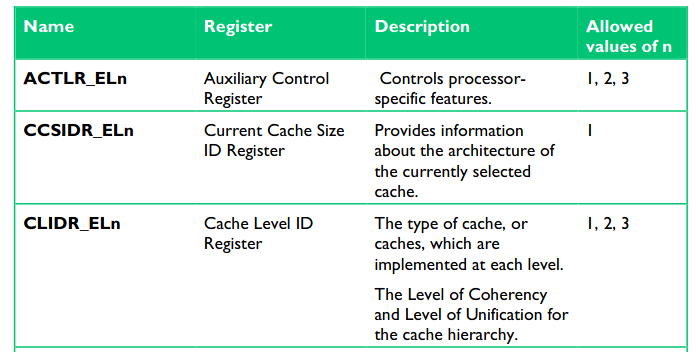
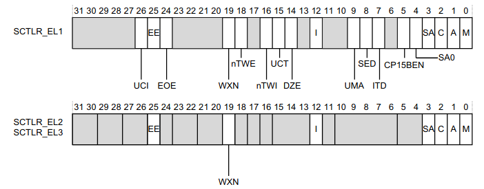

Administrivia
- Q1 statistics: mean 61.8 (> 20 pts)
- A review session and Q&A on Thursday!
- Office hours on Tuesday and Wednesday (dedicated for quiz-related questions)

Taesoo Kim
Taesoo Kim
Can a redesign of an OS in Rust give way to an even simpler framework of exception levels given its memory safety design?
init.rs

AArch64 and AArch32 are both Execution States unique to overall ARMv8-A architecture. AArch32 is meant to be backwards compatible with older 32-bit dependent versions of ARM like ARMv7-A. AArch64 is the state unique to ARMv8-A. AArch32 is comes bundled with the ARM Virtualization Extensions, Security Extensions, and Large Physical Address Extension. ARMv8-A also allows for the execution of code in both Execution States (32 vs 64) within the OS kernel or hypervisor layers.








